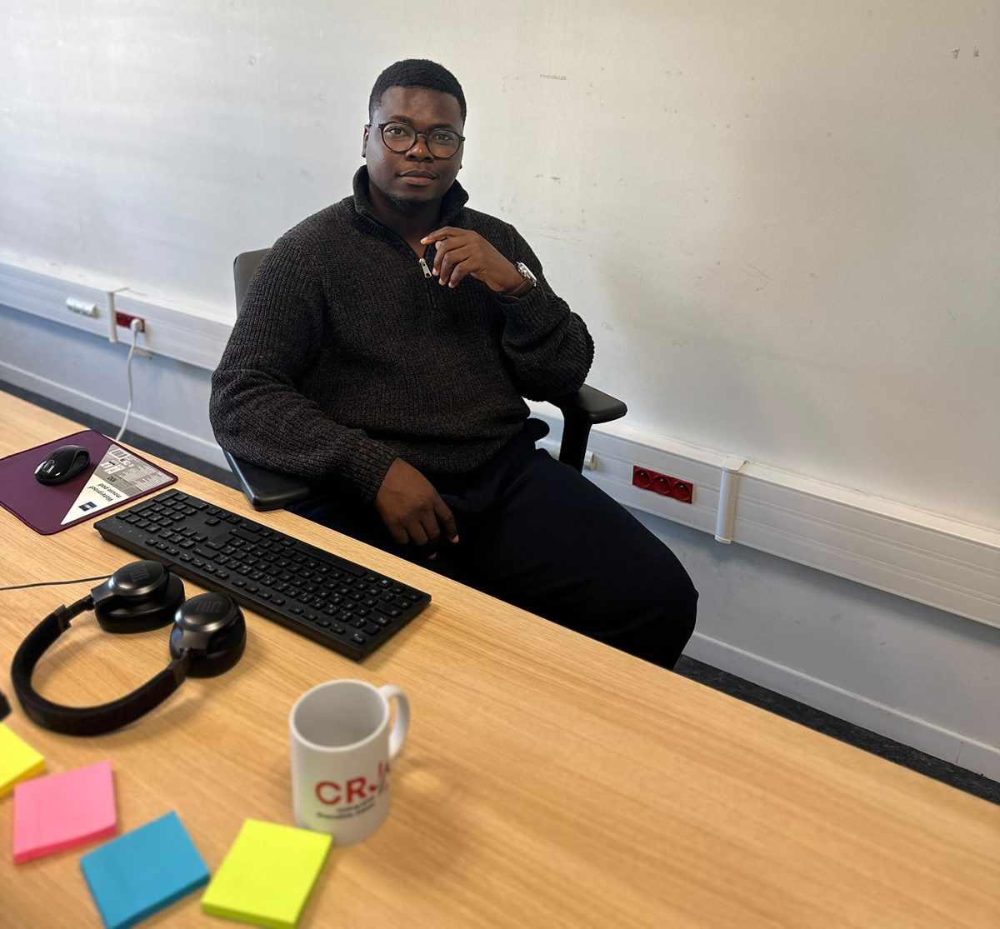

EnseignementTeaching
Rendre le droit lisible en salle de TD, et accompagner des étudiants dans leurs premiers pas de chercheurs.Making law readable in the tutorial room, and guiding students through their first steps as researchers.
Cours et missionsCourses and roles
- 2026-27Travaux dirigésTutorialsDroit de la familleFamily lawFaculté de droit, Université Grenoble Alpes. Préparation des séances, exercices de méthodologie (cas pratique, commentaire d'arrêt, dissertation) et suivi des étudiants.Faculty of Law, Université Grenoble Alpes. Session preparation, legal method exercises (problem questions, case notes, essays) and student follow-up.
- 2026-27Enseignement et rechercheTeaching and researchProgramme STEENSTEEN programmeSciences Po Grenoble, Graduate School STEEN, dont il est lui-même issu. Une mission double : enseignement auprès des étudiants et accompagnement de leur initiation à la recherche, à travers la construction et la réalisation d'une journée scientifique en SHS.Sciences Po Grenoble, STEEN Graduate School, a programme he completed himself. A twofold role: teaching the students and guiding their first steps in research as they build and run a social sciences research day.

Manière de faireApproach
Plusieurs années de pratique en cabinet auprès des acteurs du football et de recherches sur le sport ont forgé une conviction simple : une règle de droit se comprend mieux quand on part d'une situation concrète (un contrat de joueur, une clause de sponsoring, une procédure disciplinaire, etc.), puis qu'on remonte vers le texte et la jurisprudence. Cette méthode vaut tout autant en droit de la famille, qui touche à des situations que chaque étudiant peut se représenter, et nourrit l'accompagnement des étudiants de STEEN dans leurs premiers travaux de recherche.
Several years of practice alongside football stakeholders and research on sport have led to a simple belief: a legal rule is easier to grasp when you start from a concrete situation (a player contract, a sponsorship clause, a disciplinary case, and so on) and work back to the text and the case law. The same method works just as well in family law, which deals with situations every student can picture, and shapes the way he guides STEEN students through their first research projects.